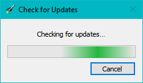
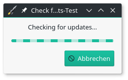
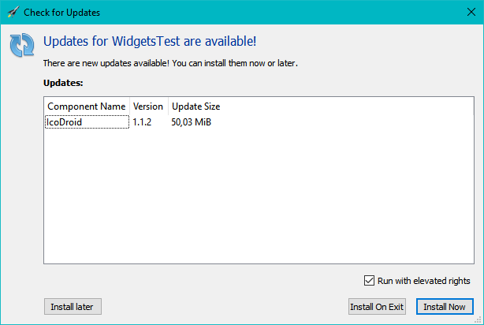
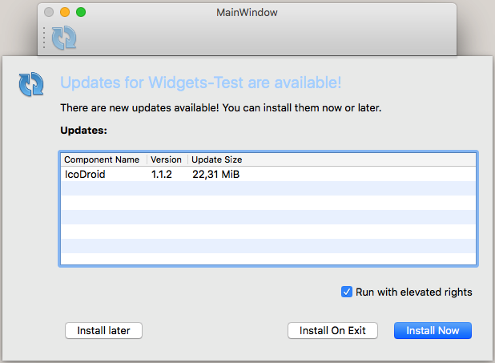
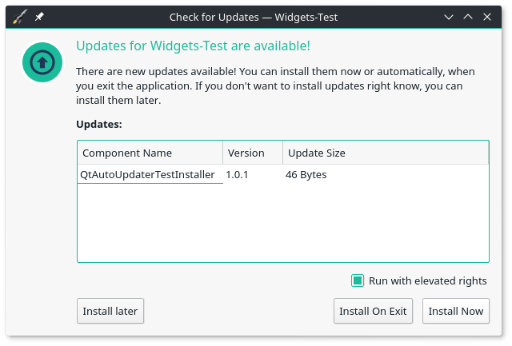
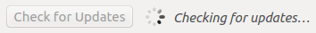
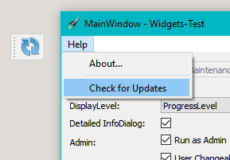
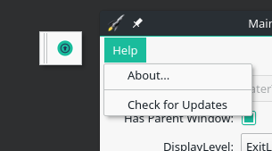

|
QtAutoUpdater
2.1.1
A Qt library to automatically check for updates and install them
|
|
QtAutoUpdater
2.1.1
A Qt library to automatically check for updates and install them
|
The Qt auto updater library is a library to automatically check for updates and install them. This repository includes:
Here some sample screenshots of the gui (The rocket of the information dialog is the "application icon" and depends on your application)
| Dialog Sample | Windows | Mac | X11 |
|---|---|---|---|
| Progress Dialog |

Progress Dialog | 
Progress Dialog |

Progress Dialog |
| Information Dialog |

Information Dialog |

Information Dialog |

Information Dialog |
| Update Button |
Update Button | 
Update Button |

Update Button |
| Update Action |

Update Action | 
Update Action |

Update Action |
There are multiple ways to install the Qt module, sorted by preference:
~/Qt/MaintenanceTool)Add or remove components and click on the Settings buttonRepositories, scroll to the bottom, select User defined repositories and press AddOk, make shure Add or remove components is still selected, and continue the install (Next >)Qt > Qt 5.8 > Skycoder42 Qt modules)Qt Auto Updaterqmakemake qmake_allmakemake installThe autoupdater is provided as a Qt module. Thus, all you have to do is add the module, and then, in your project, add QT += autoupdatercore or QT += autoupdatergui to your .pro file - depending on what you need!
The usage of this library is not that complicated. However, to make this work you will have to use the Qt Installer Framework to create and installer/updater. If you already now how to to that, just check out the examples below. If not, here are some links that will explain how to create an online-installer using the framework. Once you have figured out how to do that, it's only a small step to the updater library:
Important:
Since this library requires the maintenancetool that is deployed with every Qt Installer Framework installation, the examples cannot be tested without a maintenancetool! If you intend to use this library, the maintenancetool will be available for your final application. For testing purpose or the examples, I set the path to the MaintenanceTool that is deployed with the installation of Qt (or any other maintenancetool). So make shure to adjust the path if you try to run the examples.
The following example shows the basic usage of the updater. Only the core library is required for this example. It creates a new updater instance that is connected to the maintenancetool located at "C:/Qt/MaintenanceTool". As soon as the application starts, it will check for updates and print the update result. If updates are available, their details will be printed and the maintenancetool is scheduled to start on exit. In both cases, the application will quit afterwards.
This example will show you the full dialog flow of the controller. Both libraries are required for this example. Since there is no mainwindow in this example, you will only see the controller dialogs. Please not that you can control how much of that dialogset will be shown to the user. This example is reduced! for a full example with all parts of the controller, check the Tests/WidgetsTest application.
The documentation is available on github pages. It was created using doxygen. The HTML-documentation and Qt-Help files are shipped together with the module for both the custom repository and the package on the release page. Please note that doxygen docs do not perfectly integrate with QtCreator/QtAssistant.
The core library does not need any translation, because it won't show anything to the user. The Gui library however does. The project is prepared for translation. But since I speak only english and german, those are the only languages I can provide translations for. However, you can easily create the translations yourself. The file src/autoupdatergui/translations/QtAutoUpdaterController_template.ts is a ready-made TS file. Just rename it (e.g. to QtAutoUpdaterController_jp.ts) and open it with the QtLinguist to create the translations.
Most icons have been found using IconArchive
 1.8.13
1.8.13